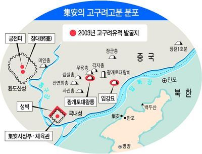
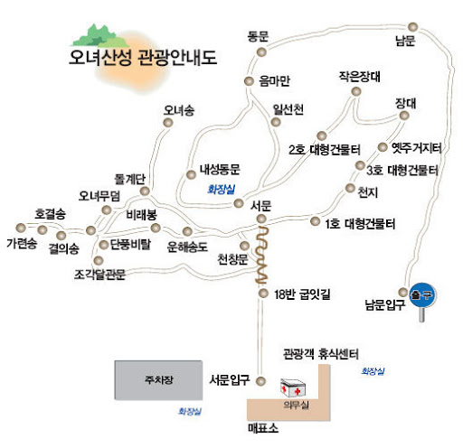
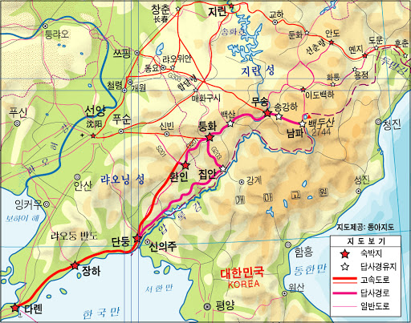

백두산, 지안 고구려 유적
높은 산의 멋과 아름다움을 볼 수 있는 곳 백두산,
고구려의 기상과 문화를 느낄 수 있는 곳 지안.



2022년
07월 28일
인천(ICN),
07월 29일
07월 30일
07월 31일
08월 01일
08월 02일
08월 03일
ICN
느낀 점, 배운 것
참고 블로그:
지안시 관광
오녀산성, 졸본성
동아일보:
지안의 고구려 무덤은 왜 백두산을 바라볼까
참고 블로그:
서파-북파 종주
참고 블로그:
등산지도
참고 블로그:
자유여행
참고 블로그:
등산지도 모음
중국 지명/인물의 우리말 뜻
최초 작성: 2019년 09월 09일
최종 수정: 2019년 09월 09일